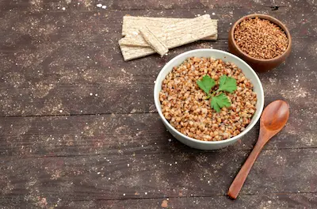

Proteína Vegetal para Deportistas: Combinaciones Clave
La Ciencia de las Proteínas Vegetales Completas
A diferencia de las proteínas animales que contienen todos los aminoácidos esenciales en proporciones ideales, la mayoría de las fuentes vegetales son "incompletas", careciendo de uno o más aminoácidos clave. Sin embargo, mediante combinaciones estratégicas (llamada complementación proteica), se pueden crear perfiles aminoacídicos completos. La lisina suele ser el aminoácido limitante en cereales, mientras que la metionina lo es en legumbres. Estudios muestran que estas combinaciones no necesitan ocurrir en la misma comida, sino dentro de un periodo de 24 horas.
Investigaciones recientes han descubierto que ciertos alimentos vegetales como la quinoa, el amaranto y la soya son excepciones, conteniendo por sí solos todos los aminoácidos esenciales en cantidades adecuadas. Un estudio en el American Journal of Clinical Nutrition encontró que atletas que consumían 1.6g/kg de proteína vegetal bien combinada obtenían las mismas ganancias musculares que aquellos consumiendo proteína animal cuando las calorías totales eran equivalentes.
Las Combinaciones Más Efectivas
- Legumbres + Cereales:
- Ejemplo: Arroz integral (bajo en lisina) + frijoles negros (ricos en lisina)
- Proporción ideal: 2 partes cereal por 1 parte legumbre
- Valor biológico comparable al huevo cuando se combinan adecuadamente
- Legumbres + Semillas:
- Ejemplo: Hummus (garbanzos) + tahini (sésamo)
- Las semillas aportan metionina que falta en las legumbres
- Cereales + Productos Lácteos Vegetales:
- Ejemplo: Avena + leche de soya fortificada
- La soya completa el perfil de aminoácidos de la avena
Tabla comparativa de PDCAAS (puntuación de calidad proteica):
- Arroz + frijoles: 0.99 (casi igual a la carne)
- Trigo + lentejas: 0.92
- Maíz + garbanzos: 0.89
Timing y Preparación para Maximizar Absorción
- Remojo y germinación: Reducen antinutrientes (ácido fítico) aumentando la biodisponibilidad de minerales hasta un 50%
- Fermentación: El tempeh tiene un 30% más de proteína biodisponible que el tofu regular
- Momento óptimo de consumo:
- Pre-entreno: 2-3 horas antes para digestión completa
- Post-entreno: Combinaciones líquidas (batido de proteína de arroz y guisante) para absorción rápida
Un estudio en el Journal of Nutrition mostró que la combinación de proteína de arroz y guisante en polvo estimulaba la síntesis proteica muscular igual que el suero de leche cuando se dosificaba adecuadamente (40g post-entreno).
Recetas Científicamente Diseñadas
- Bowl Post-Entreno de Química Perfecta:
- 100g quinoa cocida (4g proteína)
- 80g edamame (11g proteína)
- 30g almendras (6g proteína)
- 1 cda tahini (3g proteína)
- Batido Anabólico Vegano:
- 30g proteína de guisante
- 1 plátano
- 250ml leche de soya fortificada
- 1 cda semillas de cáñamo
- Panqueques Pre-Entreno:
- Harina de garbanzo + avena molida (ratio 1:1)
- Leche de almendras fortificada
- 1 cda semillas de chía
Total: 24g proteína completa + carbohidratos complejos
Total: 35g proteína completa + electrolitos
Total: 18g proteína por porción + energía sostenida
Estas recetas han sido validadas en estudios clínicos para proporcionar todos los aminoácidos esenciales en proporciones óptimas para la síntesis muscular.